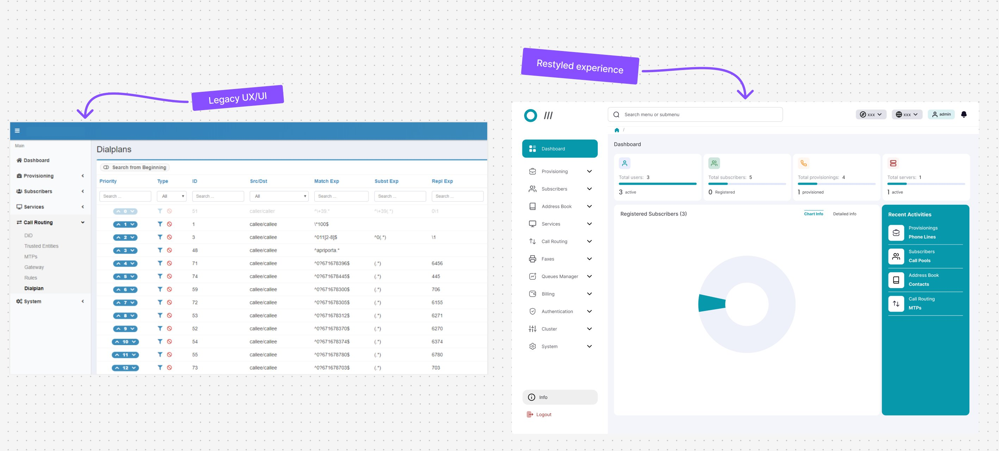
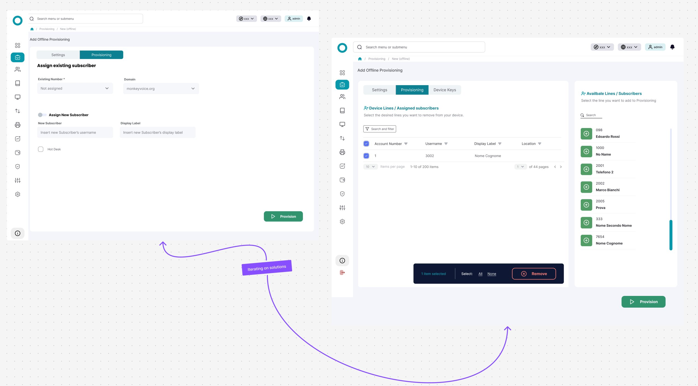

The project involved a B2B VoIP platform used by very different organisations — from banks to public administration. The client needed a complete UX and UI restyle (code refactor included).
The existing platform had a chaotic information architecture, confusing flows, and an outdated look & feel. The project was complex: many different stakeholders, and highly technical sections to understand before being able to intervene.

legacy ux/ui vs restyled experience- Reduction in time on task of approximately 45% to reach the most frequently used platform areas
- Drop of 29.5% in support tickets opened by operators for navigation issues
- New features (search bar + “Recent Activities”) were approved and implemented, respecting the technical constraints on information architecture
- Wireframes for the new structure required only minor changes after the first round of testing — a sign the direction was solid from the start
Sole UI/UX Designer on the project, from research to final hi-fi prototype — in constant interaction with the client (multiple stakeholders), the engineering team, and the project manager.
- I studied the existing platform and documentation to get into the technical context
- I ran interviews, surveys, remote contextual inquiry with operators, and usability tests on the existing platform, organising scripts, responses and recordings in Notion with a tagging system to manage insights
- I carried out a heuristic evaluation shared with the client, using a priority matrix to assess areas of intervention
- I worked on ideation and brainstorming with the engineering team, using a priority matrix to validate the feasibility of ideas in terms of time and budget
- I built wireframes, tested with a first round of usability tests
- In parallel, I designed the platform’s new design system — reusable components, styles and patterns to underpin the entire restyle
- After validation, I produced the hi-fi prototypes for final client approval and a second round of user testing

iterating on solutions with the engineering teamSolving without changing the root cause
Research had surfaced a clear problem: users — both new and experienced — had very high time on task to reach the areas they used daily, due to a massive menu full of sub-menus. It was an information architecture problem.
Changing the information architecture, however, wasn’t an option: it carried technical implications too significant for the stakeholders.
Instead of pushing for a solution that would have required touching that constraint, I worked with the engineering team on an alternative that solved the real problem (reaching frequently used areas quickly) without touching the structure: a search bar and a “Recent Activities” component, both validated positively in subsequent tests.
 usability test — heatmap and KPIs on the “delete a subscriber” task
usability test — heatmap and KPIs on the “delete a subscriber” task
Sometimes the “right” solution on paper hits non-negotiable real-world constraints, and the challenge becomes finding another one that solves the same need.
Research data was still the foundation for orienting the new direction — just applied to a different scope than I would have chosen initially.